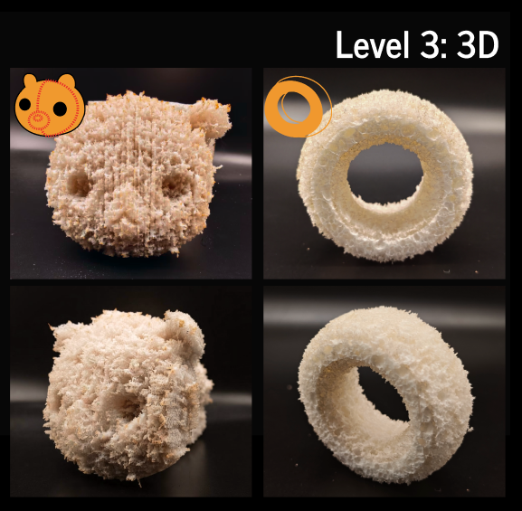

Level 3: 3D
Level 3: 3D uses non-uniform depth engraving and appropriate processing orientations to approximate continuous volumes, including turtles, bears, doughnuts, vehicle-like forms, and simplified Stanford Bunny models. The objective is rapid generation of the main spatial characteristics of a digital model, rather than exact reproduction of fine geometric detail.
Import a prepared model or begin with a provided example. Multi-sided processing can produce more complete forms but requires careful alignment when the material is flipped or reoriented. Fiber variability, thermal effects, expansion, and drying shrinkage can produce deviations from the model.

Level 3: 3D
Process
- Create Your Own Model: Start by building a 3D model in your preferred modeling software. This can be any complex shape that you wish to work with, such as organic forms, machinery, or abstract structures. The model should be designed with the desired complexity and details in mind.
- Import the Model into the Design Tool: After completing your model, import the file into the LaserMorph design tool. The workbench supports geometry preparation and toolpath generation, with DXF toolpaths and G-code exported for fabrication.
- Adjust Model Parameters: Once the model is imported, adjust the parameters for the laser processing, such as cutting depth, speed, and the number of passes. These adjustments will help prepare the model for the laser cutting process and ensure optimal results.
- Test Using Example Models: If you're new to the process or looking for inspiration, you can refer to example models provided in the tool, such as the rabbit or car models. These models can be used as templates for creating your own designs or as practice for understanding the tool's capabilities.
- Process the Model with LaserMorph: After making adjustments, use the LaserMorph tool to process your model. The tool will generate the necessary cutting paths and prepare the model for laser engraving and activation. This allows you to see how the material will behave once cut and activated.
- Observe the Final Result: Once the model is processed and activated, observe how the material responds and transforms into the final 3D shape. This step demonstrates the effectiveness of composite curvatures and other techniques used to create intricate and dynamic shapes.